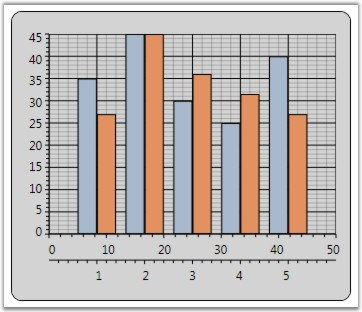

WPF Chart enables to set the orientation of the ChartAxis. The default orientation of the ChartAxis is Horizontal. This property is mostly used in Multiple Axes Scenarios.
Table 134: ChartAxis Property
|
ChartAxis Property |
Description |
|
Orientation |
gets / sets the orientation of the axis. |
|
[XAML]
<syncfusion:ChartArea Name="area"> <syncfusion:ChartSeries Name="series" Data=" 1 35 2 45 3 30 4 25 5 40" /> <syncfusion:ChartSeries Name="series1" Data=" 1 30 2 50 3 40 4 35 5 30" > <syncfusion:ChartSeries.YAxis> <syncfusion:ChartAxis Orientation="Horizontal" /> </syncfusion:ChartSeries.YAxis> </syncfusion:ChartSeries> </syncfusion:ChartArea> |
The following image illustrates Chart with Y-axis orientation set as Horizontal.

Figure 189: Chart Y-axis Orientation set as "Horizontal"
See Also
Inverted Axis, Opposed Axis, Multiple Axes